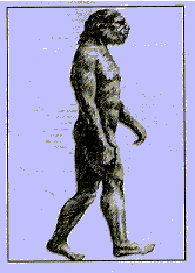

| Feature Article - September 1997 |
| by Do-While Jones |

There were reports in the general news media that "you're not a Neanderthal after all"1 because "we didn't mate with Neanderthals".2 We will discuss the study3 that prompted these reports later, and let you decide whether the DNA study results are conclusive or not. But first, you need to know why it is so important to evolutionists to prove that Neanderthal4 man is a separate species, and not our ancestor.
The first Neanderthal skeleton was discovered in 1856, just three years before the publication of Darwin's Origin of Species. The nineteenth century evolutionists believed that apes evolved into some sub-human missing links, which evolved into man. Naturally, Neanderthal man was immediately assumed to be one of those missing links and was depicted as at the left.
The more scientists learned about Neanderthal man, the more they realized he did not fit in with their theory very well. Apes supposedly got smarter as their brains gradually evolved in size from about 400 cc to modern man's 1350 cc brain.5 It was difficult to explain how a Neanderthal man, with his 1740 cc brain6, fit into this process.
The Neanderthal skeletons were found in graves with hands neatly folded, surrounded by fossilized pollen. This is a pretty clear indication that they were buried with flowers in some sort of funeral ceremony. Only humans do that. Furthermore, they found tools (and possibly a musical instrument7) associated with some of the Neanderthal remains. Every indication was that he was as fully human as Homo sapiens (modern man).
But worst of all was the time problem. According to the evolutionists' dating, Homo sapiens supposedly evolved 100,000 years ago.8 Some people even claim there is evidence of Homo sapiens in Australia 116,000 to 176,000 years ago.9 Neanderthal man supposedly lived from 36,000 to 75,000 years ago,10 or maybe as long as 82,000 years ago.11 Homo sapiens could not have evolved from Neanderthals if Homo sapiens were here first. Even if you assume that Neanderthals existed more than 176,000 years ago, but their fossils just haven't been discovered yet, that's still a problem because the theory requires the inferior species to die out for the superior species to evolve.
Here's why death is necessary for evolution: Suppose that you, through some extremely fortunate (we have to carefully avoid the adjective "miraculous" ) chance, acquire a new, beneficial gene by random mutation. Since you produce children through a sexual process in which your children inherit half of your genes and half of your spouse's genes, the odds are that only half of your children will acquire the marvelous new gene. One quarter of your grandchildren will acquire it; one eighth of your great-grandchildren will acquire it; and so on. Your marvelous new gene will not become a dominant characteristic in future generations.
But suppose that it is a cruel world, and many children don't survive. The half of your children who have the marvelous new gene will win the battle for survival. Your children without the new gene, and all your neighbor's children, will die before they mature enough to have children. Your sons and daughters will have no choice but to marry their sisters and brothers who have the new gene, so the new characteristic provided by this new gene will become established in the population.
We may have over-simplified the process a little bit too much, but that's the theory of evolution in a nut shell (a particularly appropriate metaphor, in this case). Evolution depends upon death to weed out the genes of the inferior race so that the superior race can become established.
Neanderthal man and modern man could not live together for tens of thousands of years, interbreeding with each other, without the races blending. Therefore, the evolutionists have to believe that Neanderthal man and modern man were distinct species, incapable of interbreeding.
Evolutionists have held this belief for several years, even before the questionable DNA study. For example, it has been argued that nasal features indicate that modern man and Neanderthal man were separate species.
"It is mind-boggling how different Neandertal nasal structures are from those of humans", [Jeffery H.] Schwartz [of the University of Pittsburgh] holds. 12From his choice of words it is clear that Schwartz didn't consider Neanderthals to be human.
In recent years, some evolutionists have claimed that H. sapiens and H. neanderthalensis came from a common ancestor called H. heidelbergensis about 500,000 years ago. The figure at the left 13 shows a reconstruction of H. heidelbergensis based entirely upon two teeth and part of a leg bone found in Boxgrove, England, a lower jaw found near Heidelberg, Germany and a skull from Bodo, Ethiopia.
Pardon our skepticism, but there appears to be a lack of objectivity here. Suppose that a Jewish archeologist, looking for proof that Goliath and other Philistine giants really did exist, found the Boxgrove leg bone in Jordan. The figure shows that the Boxgrove leg bone is larger (thicker and stronger) than the average modern leg bone. So, the Jewish archeologist could claim that he had found the remains of a race of giant men which he called H. philistensis.
Would any good scientist take his claim seriously? Wouldn't he be laughed at if he tried to connect it with a skull in Ethiopia? You know that he would be criticized for starting with the idea that Philistine giants existed, and trying to twist the data to support his preconceived notion. But evolutionists join a British leg, an Ethiopian skull, a jawbone from Germany, and put it in the human family tree14 because of their preconceived notion that a common ancestor with these characteristics must have existed. This is not objective science!
Evolutionists desperately need proof that Neanderthal man is a
separate species to get him out of the line of human evolution
because he just doesn't fit properly into the theory of evolution.
He's too late and too human to be an ancestor. So, they turned
to DNA to give them the proof they needed. The news reports say
they found it. But did they? Let's take a good look at that study
and see what they really found in the Neanderthal DNA Soup.
| Quick links to | |
|---|---|
| Science Against Evolution Home Page |
Back issues of Disclosure (our newsletter) |
| Web Site of the Month |
Topical Index |
Footnotes:
1
Newsweek, July 21, 1997 page 65
(Ev)
2
Time, July 21, 1997 page 58
(Ev)
3
Krings et al., "Neandertal DNA Sequences and the Origin
of Modern Humans", Cell, Volume 90, July 11, 1997 pages 19-30
(Ev)
4
Note: we use the American spelling, "Neanderthal",
except in the quotations that use the British spelling, "Neandertal".
5
"The First Steps", National Geographic, Feb 1997 page 89
(Ev)
6
Tattersall (1995) The Fossil Trail page 181
(Ev)
7
"Neanderthal Noisemaker",
Science News, Nov 23, 1996 page 328
(Ev)
8
"The First Steps", National Geographic, Feb 1997 page 92
(Ev)
9
"Human Origins Recede in Australia",
Science News, Sept 28, 1996 page 196
(Ev)
10
"Brawn of Humanity",
Science News, May 24, 1997 page 322
(Ev)
11
Science News, Nov 23, 1996 page 328
(Ev)
12
"Nosing into Neandertal anatomy",
Science News, October 1996 page 234
(Ev)
13
"The First Europeans",
National Geographic, July 1997, page 108
(Ev)
14
Tattersall (1995) The Fossil Trail (Ev) page 234. This
figure is shown on page 5 of this issue of Disclosure.